收录于合集

导读
2022年2月27日，俄罗斯总统普京为应对西方对俄罗斯的经济和舆论遏制，命令俄罗斯战略威慑力量进入特殊战备状态。为清晰了解俄罗斯战略核武器的构成情况，本文从陆基战略核力量、海基战略核力量和空基战略核力量三个方面对俄罗斯三位一体战略核力量进行了梳理，重点介绍了陆基白杨- M洲际弹道导弹、亚尔斯洲际弹道导弹、撒旦洲际弹道导弹和萨尔马特重型洲际弹道导弹，海基德尔塔- Ⅲ级战略导弹核潜艇和北风之神级战略导弹核潜艇，空基图-22M3战略轰炸机、图-95MS和图-160M的发展现状，并梳理总结了俄罗斯主要陆基洲际弹道导弹部分参数、主要潜射弹道导弹部分参数和空基核巡航导弹主要参数，在此基础上，从装备现代化发展和战略转型两个方面对俄罗斯三位一体战略核力量未来发展趋势进行了分析。
正文
二战时期，苏联为了与美国进行军备竞争，将大量财力用于武器装备研发，造成苏联解体后，俄罗斯经济一蹶不振，长期处于低迷状态。受此影响，俄军费支出捉襟见肘，军费预算年年下降，常规现代武器装备更新换代举步维艰，常规军事力量大幅削弱，同时，美以各种借口宣布退出《反导条约》《中导条约》和《开放天空条约》，美俄《新削减战略武器条约》谈判陷入僵局，美不断在俄周边制造事端，拉拢俄周边国家，瓦解俄传统盟友，在中东等地与俄明争暗斗，对俄实施全方位战略包围，俄战略空间不断被压缩，俄美竞争日趋严峻。俄为了应对复杂多变的国际形势，维护本国安全利益，增加与美竞争筹码，在军费有限的前提下，利用苏联时代打下的基础，以最小成本大力发展战略核力量，将强大的核威慑能力始终作为其国家安全战略的基石，力求在战略核力量领域保持对美的非对称优势，以弥补其在常规武器装备领域的不足，保证其在国际舞台上的话语权。
01
俄罗斯三位一体战略核力量的组成
俄罗斯战略核力量主要继承了苏联时期的遗产，苏联解体后，经过近30年的发展，俄罗斯的战略核力量体系相对较为完善，已经形成了完整的陆、海、空三位一体核打击能力，主要包括陆基战略核力量、海基战略核力量和空基战略核力量。陆基战略核力量主要由陆基发射井和公路机动发射洲际弹道导弹的战略导弹兵组成，目前，白杨-M、亚尔斯以及撒旦等系列洲际弹道导弹是组成俄陆基战略核力量的核心；海基战略核力量主要由海基战略巡航核潜艇潜射弹道导弹组成，包括德尔塔级、北风之神等10艘核潜艇，波塞冬核动力无人水下航行器以及魟鱼、轻舟和圆锤等潜射弹道导弹；空基战略核力量主要由空基战略轰炸机发射巡航导弹组成，主要由图-22M3、图-95MS、图-160M战略轰炸机和相应的核巡航导弹组成。同时，为了更好地指挥战略核力量运用，俄正在建设新的核力量战略指挥中心，以保证俄在遭受核打击的情况下，仍能保持正常的核战略指挥能力。
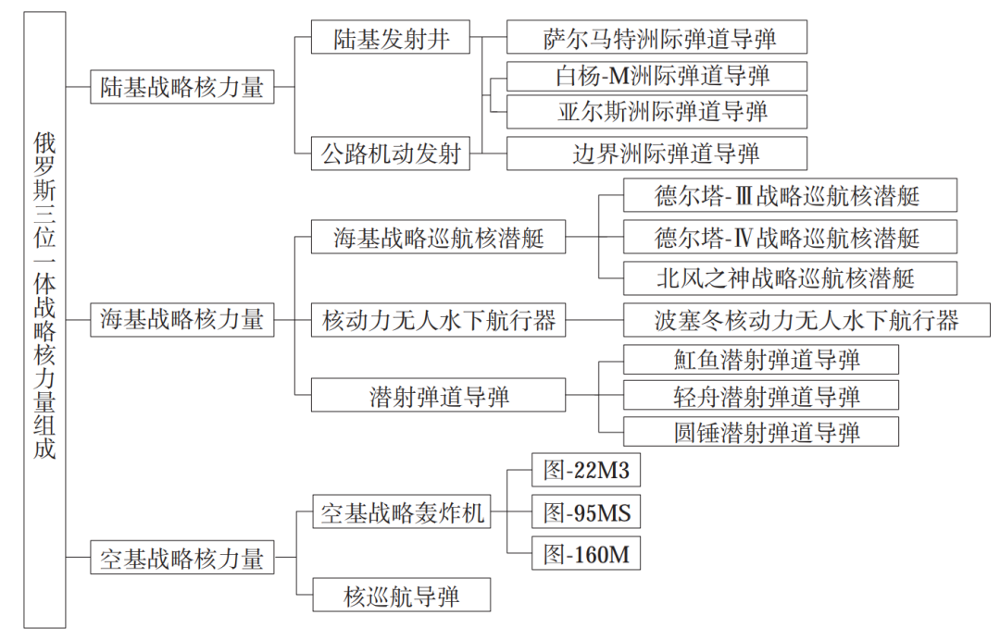
图1 俄罗斯战略核力量构成
02
俄罗斯三位一体战略核力量发展现状
俄罗斯三位一体战略核力量体系主要由陆基战略核力量、海基战略核力量和空基战略核力量等组成。
2.1 陆基战略核力量
俄罗斯现役陆基战略核力量主要包括SS-25（白杨）、SS-27（白杨-M）、SS-29（亚尔斯）、SS-18（撒旦）等型号的约300枚洲际陆基弹道导弹，如图2所示，配有可实战核弹头约1 130枚，实际部署核弹头约810枚。从发射方式看，主要有陆基发射井发射和公路机动发射两种，目前，其现役部署的洲际弹道导弹型号主要有白杨-M、亚尔斯以及撒旦等洲际弹道导弹。
(1）白杨-M洲际弹道导弹
白杨-M洲际弹道导弹于1993年开始研制，1998年正式部署，采用陆基发射井和公路机动发射两种部署方式，是一种单弹头导弹，射程超过10 000 km，飞行速度快，并能作变轨机动飞行，具有很强的突防能力。弹头设计上，采用了多层壳体结构，以提高弹头抗打击能力，同时，根据作战需要，白杨- M洲际弹道导弹也可以改装成可携带3～4个分导式多弹头导弹。动力装置上，采取三级固体推进系统和新的推力矢量控制方式，通过扩大发动机直径扩展推进剂装药空间，增加导弹射程；制导与控制上，采用新的空气动力学设计，相比传统的惯性弹道，导弹在飞行过程中可实现机动滑翔，弹道高度可变，弹头突防概率变大，在导弹的末段推进与控制系统中，导弹发动机按照预设的程序带动4个互通的燃气发生器通过改变控制力的方向来实现导弹机动变轨，从而提高弹头命中率。
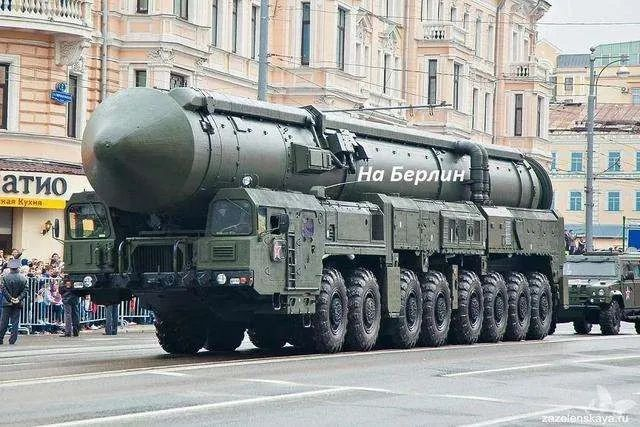
图2-1 白杨洲际弹道导弹
(2）亚尔斯洲际弹道导弹
亚尔斯洲际弹道导弹是白杨- M洲际弹道导弹的升级版，于2007年首次发射成功，2009年正式服役，采用陆基发射井和公路机动发射两种部署方式，是俄罗斯新一代可携带多弹头洲际弹道导弹，其采用分导式弹头设计理念，可以携3～4枚当量为1 500～2 500 kt的核弹头，根据作战需要改装后，最多可携带8～10枚核弹头，命中精度小于200 m，最远射程可达11 000 km左右。在动力装置和制导与控制设计上，亚尔斯洲际弹道导弹继承了白杨- M洲际弹道导弹的弹道设计和机动变轨能力，但同时又加入了新型突防技术，比如增加了主动式电子干扰和红外干扰技术，突防时，能够使敌反导系统中的光电探测设备致盲，降低被敌拦截的概率，因此，相比白杨- M洲际弹道导弹，其抗干扰能力更胜一筹。
同时，为满足俄日益增长的战略核力量发展需要，在亚尔斯洲际弹道导弹的基础上，俄于2006年研制了亚尔斯洲际弹道导弹的升级版——边界洲际弹道导弹，并于2018年开始量产。其弹长约12 m，直径约2 m，起飞质量约36 t，目前一共进行了5次试射，其中成功4次，其具体技战术性能尚未完全披露，据估计其最大射程约11 000 km，总质量约80 t，至少配备4枚分导式核弹头。
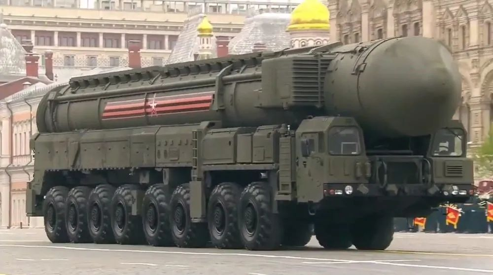
图2-2 亚尔斯洲际弹道导弹
(3）撒旦洲际弹道导弹
撒旦洲际弹道导弹是俄罗斯在苏联时期研制的多弹头洲际弹道导弹，于1975年正式服役，是目前世界上现役体积、威力最大的导弹。经过多次改进，撒旦洲际弹道导弹弹头精度达到350 m以内，可以携带10个核弹头，射程可达16 000 km，是一款专门打击发射井等加固目标的导弹。但撒旦洲际弹道导弹服役年限过长，俄亟需对其更新换代，于是萨尔马特重型洲际弹道导弹应运而生。
萨尔马特重型洲际弹道导弹[8]于2015年实验，2017年进行首次发射试验，计划在2020年进入量产，并于2021年装备俄军以取代撒旦洲际弹道导弹。其采用液体火箭发动机，推力更大，投送能力更强，最大射程可达18 000 km，命中精度约200 m，最大速度达到马赫数20，最少可携载10个分导式核弹头，若采用高超声速弹头，可突破敌反导系统，快速打击敌远程目标。未来，萨尔马特重型洲际弹道导弹将与俄现役亚尔斯、白杨- M以及匕首等，构成俄未来几十年强大的陆基远程战略核打击体系。
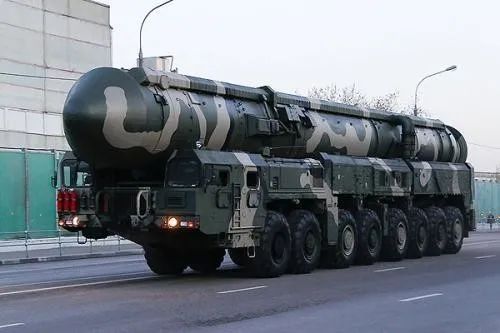
图2-3 萨尔马特洲际弹道导弹
俄罗斯主要陆基洲际弹道导弹部分参数如表1所示。
表1 俄主要陆基洲际弹道导弹部分参数
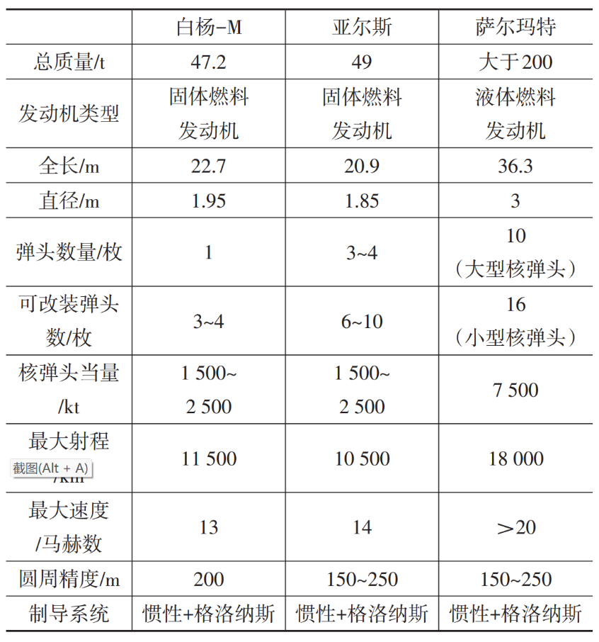
2.2 海基战略核力量
俄罗斯现役10艘战略导弹核潜艇，主要包括1艘德尔塔-Ⅲ级、6艘德尔塔- Ⅳ级以及3艘北风之神级，部署有魟鱼、轻舟以及圆锤等型号约160枚潜射弹道导弹，配有可实战核弹头约720枚，实际部署核弹头约560枚。
德尔塔-Ⅲ级战略导弹核潜艇可携带16枚魟鱼潜射弹道导弹，每枚导弹可携带3枚分导式核弹头，最多可携带48枚核弹头，最大射程约6 500 km；德尔塔- Ⅳ级战略导弹核潜艇是德尔塔-Ⅲ级战略导弹核潜艇的升级版，可携带16枚轻舟潜射弹道导弹，每枚导弹可携带4枚分导式核弹头，最多可携带64枚核弹头，最大射程约8 300 km，水下排水量约13 500 t；北风之神级战略导弹核潜艇是俄最新一代海基战略核潜艇，如图3所示，也是未来俄战略核潜艇部队的核心力量，计划2021年前建造8艘，用来逐步取代德尔塔- Ⅲ级和德尔塔- Ⅳ级战略导弹核潜艇。北风之神级战略导弹核潜艇可携带16枚圆锤潜射弹道导弹，每枚导弹可携带6枚分导式核弹头，最多可携带96枚核弹头，最大射程可达9 000 km，水下排水量可达17 000 t。
俄罗斯主要潜射弹道导弹部分参数如表2所示。
表2 俄罗斯主要潜射弹道导弹部分参数
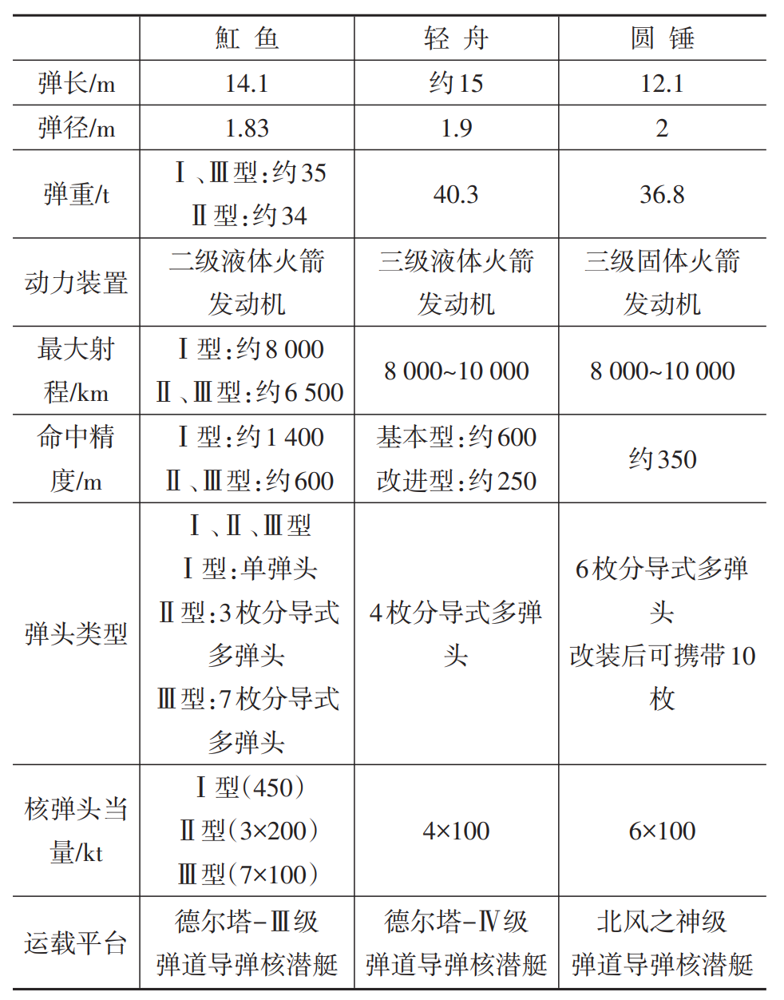
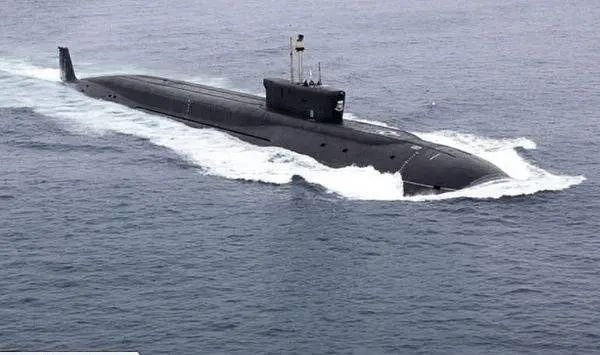
图3 北风之神级弹道导弹核潜艇
除了战略导弹核潜艇外，俄还致力于发展波塞冬核动力无人潜航器，以丰富俄海基战略核威慑。波塞冬核动力无人潜航器长约20 m，直径约2 m，质量约40 t，续航力超过10 000 km、最大潜深约1 000 m，战斗部可携载2 000 kt TNT当量热核弹头，预计2027年左右投入使用，是俄未来海基战略核力量的重要杀手锏。
2.3 空基战略核力量
俄罗斯空基战略核力量主要由图-22M3（约98架）、图-95MS（约50架）以及图-160M（约15架）战略轰炸机组成，如图4所示，其库存核弹头约为580枚，其中担负战备值班的核弹头数量为200枚。
图-22M3战略轰炸机最大飞行速度可达马赫数2.3，最大载弹量为24 t，其机翼、机腹和机身内都可携带弹药，具备超声速飞行能力，最大航程可达7 000～12 000 km，作战半径可达2 400 km，可挂载Kh-47匕首高超声速导弹，可对敌纵深目标实施全天候战役和战略空中打击，是俄现役主力战略轰炸机之一；图-95MS战略轰炸机最大飞行速度可达马赫数0.7，最大航程可达11 000 km，最大载弹量约20 t，可携带16枚射程2 500 km、配备250 kt核弹头的Kh-55巡航导弹，同时也可携带射程超过2 000 km、配备核弹头的Kh-102巡航导弹；图-160M战略轰炸机最大航程约16 000 km，载弹量达40 t，最大飞行速度可达马赫数2，可携带12枚射程2 500 km、配备250 kt核弹头的Kh-55巡航导弹，不仅能以亚声速、低空突防进行攻击，而且可以在高空、超声速情况下携带巡航导弹和近距攻击导弹进行核打击，高速度和大航程是图-160M战略轰炸机最大的特点。
与此同时，俄计划在2025—2030年左右服役新型轰炸机PAK-DA。PAK-DA是俄自主研发的一款新型隐身战略轰炸机，具备执行战略打击任务
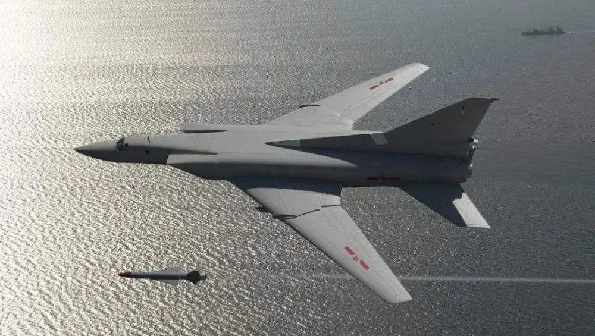
图-22M3
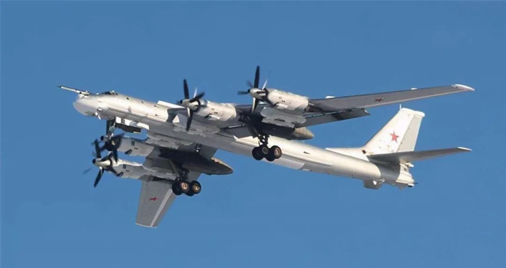
图-95MS
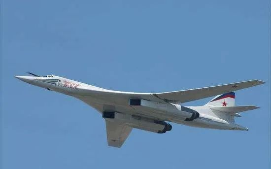
图-160M
和战术打击任务的双重能力，既可携带装备有核弹头的战略巡航导弹，也可使用常规精确制导武器，相比图-22M3、图-95MS以及图-160M,PAK- DA具有携带武器多样、隐形性能更佳、续航能力更强等优点，未来将逐步取代图-22M3、图-95MS和图-160M战略轰炸机，成为俄空基战略核力量的主战装备。
核巡航导弹方面，俄罗斯现役核巡航导弹主要包括Kh-55、Kh-555以及Kh-102等型号，是俄空基核威慑的主体。Kh-55于1968年开始研制，1983年正式服役，是一种远程亚声速空射核巡航导弹，其性能与美战斧巡航导弹类似；Kh-555是Kh-55的改进版，于1999年开始进行试验飞行，相比Kh-55,Kh-555虽然传统外形结构相似，但采用了很多新技术，弹体结构有所差异，弹长更长，弹径更大，射程更远，打击精度更准，可在50～10 000 m高度飞行，同时，Kh-555弹体采用部分隐身技术，其雷达反射截面积（RCS）达到0.01 m2;Kh-102战略核巡航导弹与Kh-101型常规战略巡航导弹的最大差别在于战斗部，是同时期研制产品，于1991年开始研制，采用新的外形设计和雷达吸波材料，隐身性能更好，可以在20～20 000 m高度飞行，配合图-95MS、图-160的远航程，具备洲际打击能力，是俄新一代空基亚声速核巡航导弹。与此同时，俄积极发展新型海燕核动力巡航导弹，目前该型导弹还处于试验阶段，相关技战术指标尚未披露，但俄总统普京称其为携带核弹头的低空飞行隐形导弹，由于其采用核动力装置，理论上具有几乎无限的航程、无法预测的轨迹及穿透拦截屏障的能力，可对目标突然发起攻击，高效突破敌反导系统，是当前和未来可预见的导弹防御和防空系统无法战胜的。
俄罗斯空基核巡航导弹主要参数如表3所示。
表3 俄罗斯空基核巡航导弹主要参数
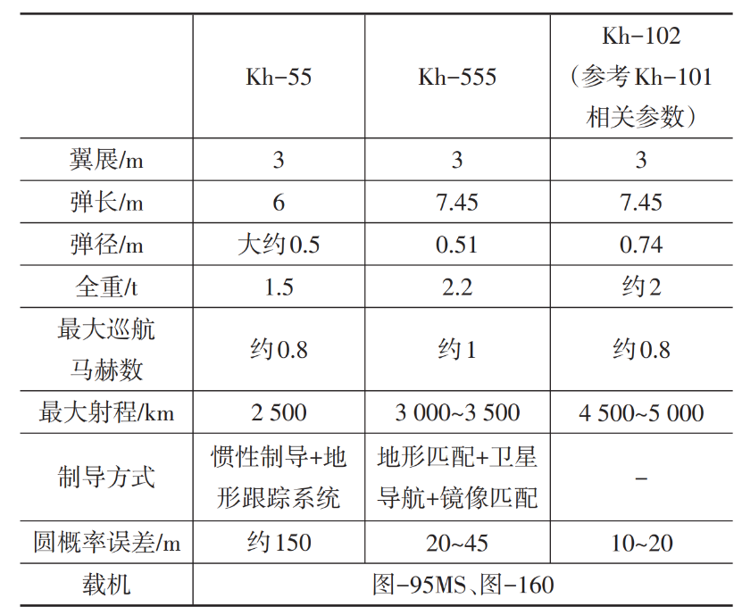
03
俄罗斯三位一体战略核力量发展趋势
俄罗斯战略核力量发展经历了美苏冷战时期的辉煌和苏联解体后的没落，但为了维持与美竞争优势，维护国家安全利益，俄在国内经济持续萎靡的情况下，依然大力发展战略核力量，完善三位一体核打击体系，提升核威慑能力。
3.1 加速战略核武器更新换代与新型战略核武器研发部署，提高装备现代化水平
随着信息化战争的不断发展，俄非常注重战略核力量的现代化建设水平，主要表现为：陆基方面，有序推进新型导弹换装和试验。战略火箭兵持续完成亚尔斯洲际弹道导弹系统的换装工作，以替换老旧的白杨系列洲际弹道导弹系统，提高导弹系统现代化水平。截至2020年底，其导弹系统现代化比率已达81%，并计划于2024年完成整个导弹系统现代化；同时，萨尔马特洲际弹道导弹系统正在进行最后战斗值班准备，预计2021年将正式担负战备值班。海基方面，大力推进新型战略核潜艇列装部署。新型北风之神- A级战略核潜艇首艇弗拉基米尔大公号于2020年6月中旬正式入列俄北方舰队，后续4艘该型号战略核潜艇处于不同建造阶段，弗拉基米尔大公号的服役，标志着俄海军第四代战略核潜艇的升级改造工作取得重大进展，同时，波塞冬核动力无人潜航器处于研发阶段，其母艇别尔哥罗德号核潜艇将于2021年服役，未来，别尔哥罗德号核潜艇搭配波塞冬核动力无人潜航器将成为俄海基核战略力量的新样式。空基方面，积极推进现役战略轰炸机升级改造，推动新型战略轰炸机研发。重点对现役图-95MS武器发射系统、航电系统、导航系统以及引擎进行升级改造，以提高其效能并延长其服役年限，目前已完成6架该型机现代化改造；改进型图-160M2将配备新型航电系统，并通过配备特殊隐身涂层进一步增强其隐身性能，该计划将于2027年前完成，同时，新型隐身轰炸机PAK- DA将于2021年左右完成试验样机的建造工作，计划2025年左右实现首飞，2028年左右批量生产。
3.2 由陆重海轻、空基为辅向海陆空并重转型
美苏冷战时期，苏联战略核力量主要以陆基战略核力量为主，海基和空基战略核力量在苏联整个核战略体系中占的分量较轻，苏联解体后，俄继承了苏联的战略思想，一方面，在战略核力量的发展上，依然呈现陆重海轻、空基为辅的特点，另一方面，随着苏联解体，俄经济陷入困境，导致俄战略核力量发展陷入停滞。1999年之后，普京政府通过近20年的不断努力，持续强化俄战略核力量建设，恢复俄战略核力量威慑能力，尽管如此，与美相比，俄虽然陆基战略核力量与美不相上下，但海基和空基战略核力量明显弱于美，俄为了保持与美博弈中的非对称优势，维护其战略利益，在巩固陆基战略核力量威慑能力的前提下，不断强化海基和空基战略核力量建设，通过开发部署海基无人潜航器和空基高超声速核巡航导弹等新型战略武器，逐步均衡完善三位一体核力量发展。未来，俄战略核力量将改变以往陆重海轻、空基为辅的发展模式，逐步向海陆空并重转型。
04
结束语
战略核威慑是俄罗斯的国家安全战略基石，尽管苏联解体迟滞了俄罗斯战略核力量的发展，但随着经济的逐步复苏与国内政治环境的稳定，加之美国不断围追堵截，俄开启了三位一体核战略力量发展新征程，未来，俄将稳步推进战略核力量发展，持续保持与美博弈中的非对称优势，强化自身战略安全。
作者： 李昌玺，助理研究员，主要研究方向为信息融合方面情报研究。范泽昊、王海洋、刘士瑞分别来自中国人民解放军第66132、32145和32148部队。
来源： 《飞航导弹》2021年第10期
排版 | 吴梦婷
本文转载自《飞航导弹》2021年第10期
文章观点不代表本平台观点